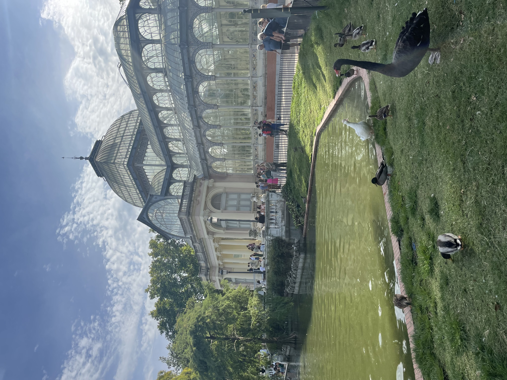
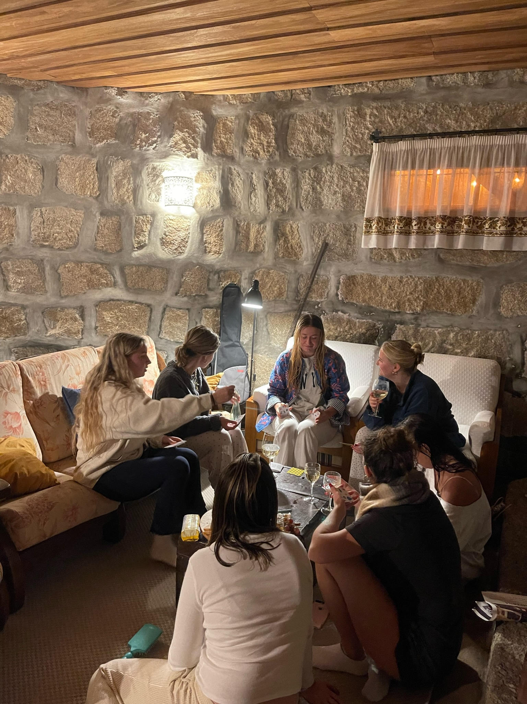
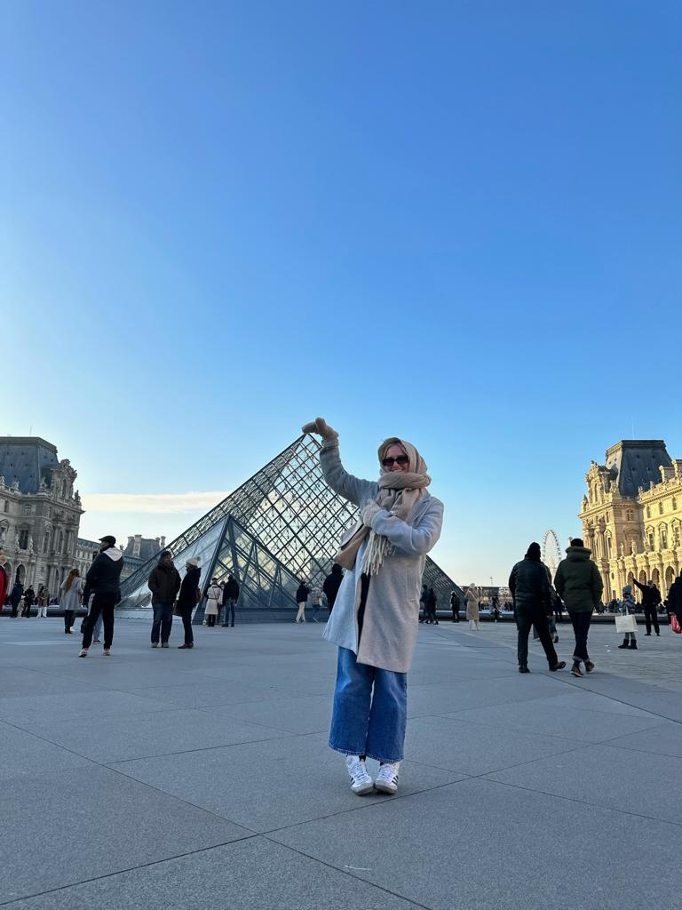
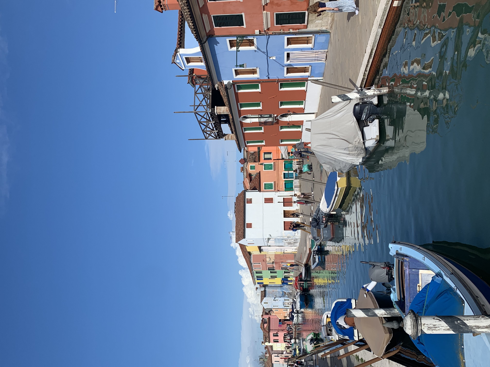

This past fall quarter (August through January) I was lucky enough to have the opportunity to study abroad in Madrid, Spain. This was a wonderful experience and I will be forever grateful for those five months. Below I have included some of my favorite moments, trips, and photos from study abroad.
Everyday Life in Madrid
While living in Madrid, I had an apartment in the heart of the city – Sol. Right outside of Plaza Mayor, our apartment fit 4 people and was a wonderful set up for what we needed. It was about a 7 minute walk to Sol station where we took the metro to class everyday. I studied at University of Carlos III which was located in Getafe, a 25 minute ride from Sol. Here I would attend classes and study in the library each day. During the school nights, my roommates and I enjoyed making dinner together, walking around the city, and embracing the night life (which was tricky for me at first as I am usually not a night owl).
Madrid was wonderful for many reasons. First off, the people were always welcoming and appreciated my broken Spanish. They were as curious to learn about our life in the US as we were to learn about theirs! Additionally, Madrid always had fun activities going on. Every Saturday and Sunday there was a flea market that closed down the streets called El Rastro. A range of vendors attended and it was always fun to walk through. In addition to El Rastro, I enjoyed going to Retiro Park, exploring new neighborhoods, trying new foods and drinks, traveling.
Favorite Trips
Although I was living in Madrid, I traveled nearly every weekend to neighboring cities and countries. Since travel between countries in Europe is easier and cheaper than if I was coming from the US, I used this opportunity to see a range of places. When asked what my favorite trip was while abroad, I can never choose just one, so here are my top three (in no particular order).
Porto, Portugal

For my birthday in November, my friends and I planned a trip to Porto, Portugal for the weekend. We rented an AirBnB in the wine country, about a 30 minute drive from the city, and friends from UCSB and home (who were studying abroad in other countries in Europe). We had a relaxing weekend in the countryside, sitting by the fire, playing games, and drinking wine (and I was surrounded by all my best friends).
Paris, France

I really enjoyed Paris for a number of reasons. I had a friend studying there who I was visiting, so it was very refreshing to not have to plan the trip myself and instead follow her to all of her favorite spots. I went in December when it was extremely cold but festive. The Lourve Museum was a highlight of my trip because I got to see many paintings and sculptures I had learned about in my art history class.
Venice, Italy

Venice was a must see spot for me when planning where to visit while living in Europe – and it did not disappoint. It was gorgeous weather and in a not too busy time of year, making it the perfect trip. It was a perfect mix of seeing all the touristy spots while still relaxing and people watching. We did a day trip to Bruno Island (pictured above) and explored the colorful island. The food was amazing and it was unlike any other place I have ever seen!